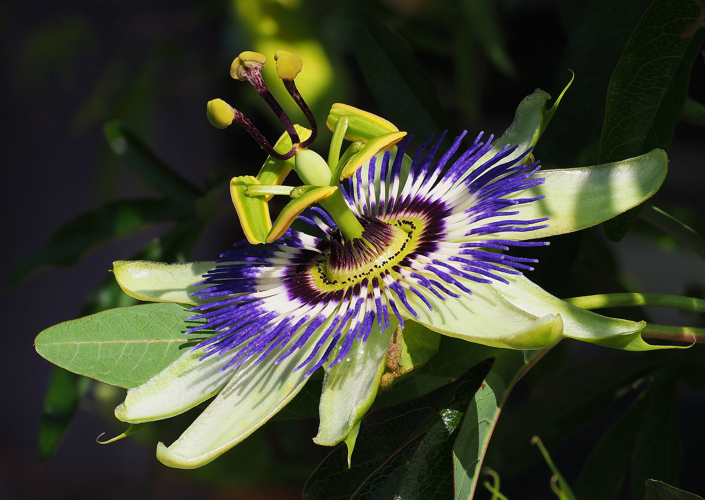
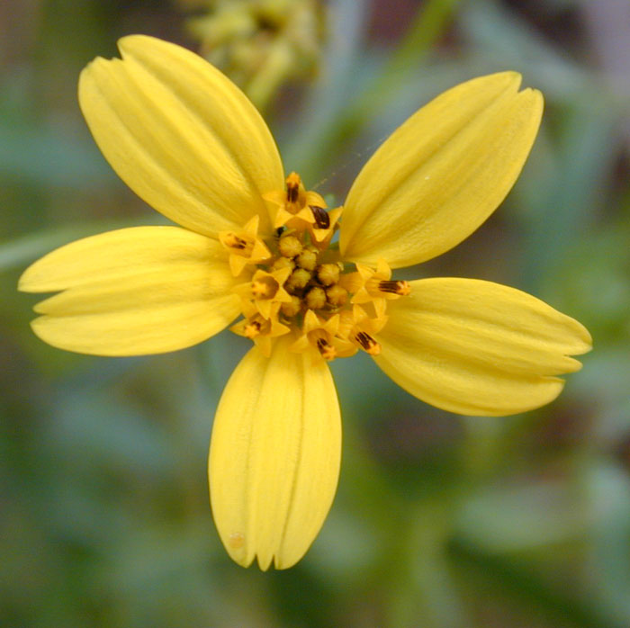
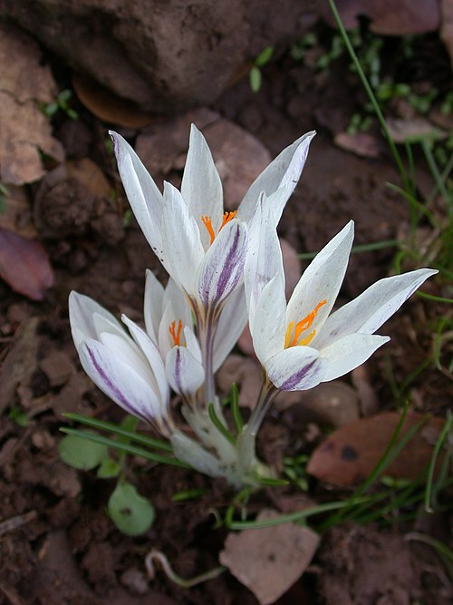
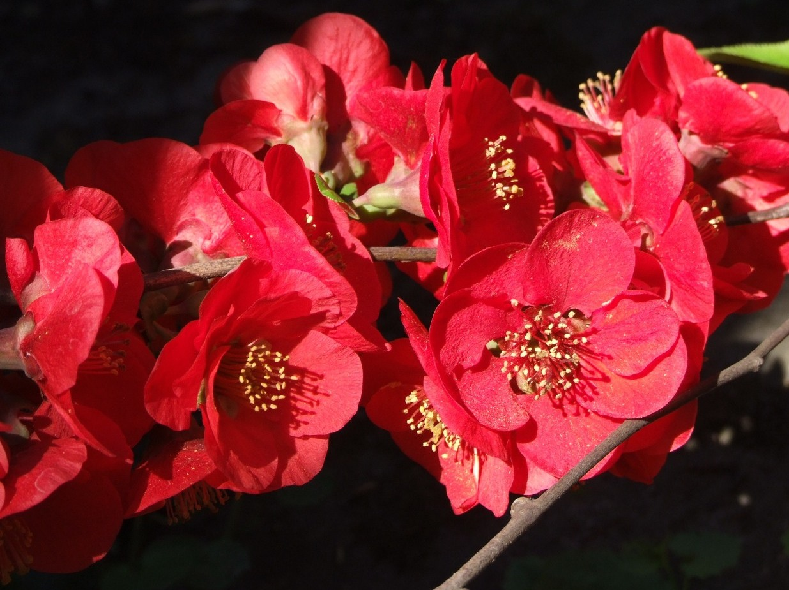

Passiflora Caerulea and Exhibited Plant Families

Asteraceae
32,000 Species and Composite Flower Heads Actually Made of Several Florets

Iridaceae
2,500 Species and Plants Who Have Inspired the Description of Pollinator Syndromes

Orchidaceae
28,000 Comsopolitan Species That Ostensibly Resemble Insects

Rosaceae
4,800 Species with Famous Members like Apples, Almonds, Cherries, and of Course the Rose

Strelitziaceae
Only Seven Species and Grown for Striking Flowers/Foliage